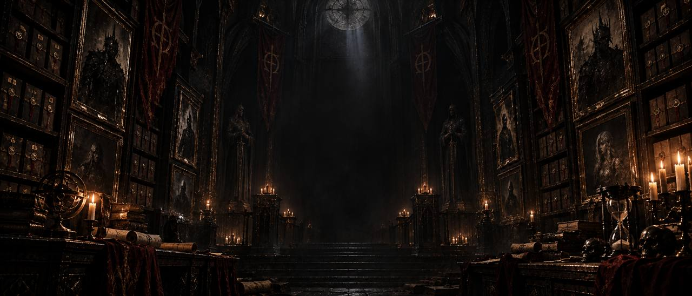

Закрытые хранилища
Архив TODM
Документы, исключённые из открытой летописи. Доступ определяется уровнем допуска читателя.
Архив устанавливает личность…

Закрытые хранилища
Документы, исключённые из открытой летописи. Доступ определяется уровнем допуска читателя.
Архив устанавливает личность…